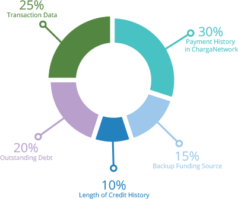

The ChargaScore is a unique real-time scoring system which reflects your payment history on the ChargaNetwork. When you first sign up, the system uses transaction data from your bank to establish a benchmark for your credit, but as soon as you start to use the Charga Network, your score will change depending on your payment track record in the ChargaNetwork. Your score is grouped into six categories: Transaction Data, Credits Used, Payment History, and Length of History. Your ChargaScore is based on both positive and negative information in your credit report. For example, late payments will lower your ChargaScore, but reestablishing a good track record of making payments on time will raise your score.
Traditional credit scores are a bit like losing weight, it all takes time and there is no quick way to fix a credit score. However, the ChargaScore is updated in realtime everyday, so you can quickly pay off some loans and your score will improve the next day! By improving your score you will get access to new online stores and it can also lead to lower interest rates. Click here to make a payment and improve your score.
ChargaScores give merchants a quick and objective measure of your credit risk in the ChagaNetwork.
With the ChargaScore you can:
1. Access credit from your favorite stores.
2. Get approved faster than with third party financial institutions.
3. Improve your score faster with realtime updated scores.
1. Keep your account up to date. Monthly payments will be automatically debited from your primary bank account. If your primary account fails then the merchant will debit your backup payment source if you have one. If you do not have one set up, you can add a backup payment funding source and improve your score.
2. Add a backup payment method.
Click here.
3. Make a payment. If you make a payment in addition to your monthly payment, your score will increase. The number of points by which your score will increase depends on a number of factors including the amount you pay.
Merchants use ChargaScores to quickly and objectively evaluate the potential credit risk. Each merchant has a different credit risk profile and therefore some businesses may offer a ChargaCard to customers who have a score of 300 and higher and other businesses may only offer ChargaCards to customers who have a score of 700 or higher. If you would like to get a store card but you have been rejected due to a low credit score, you can increase your credit score and resubmit your request for a store card.